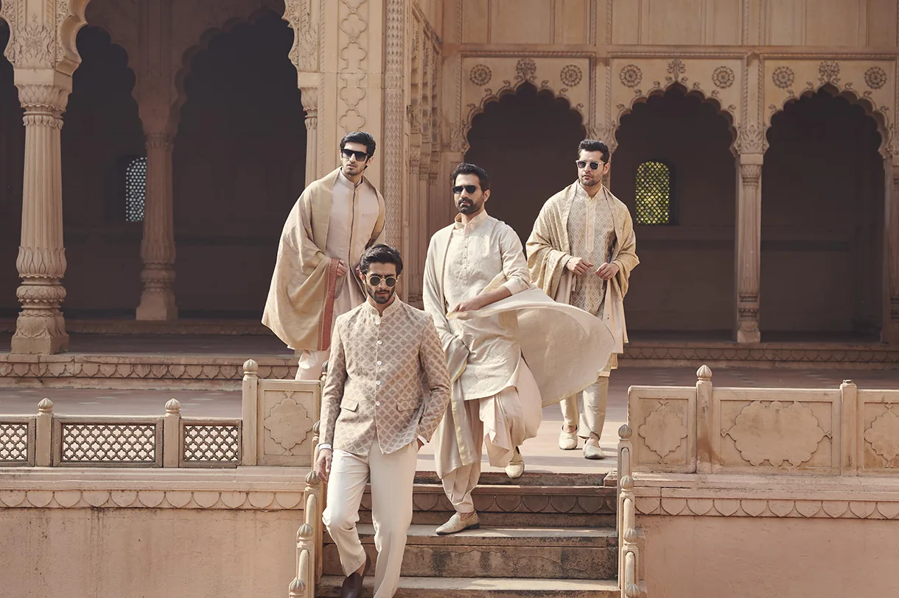
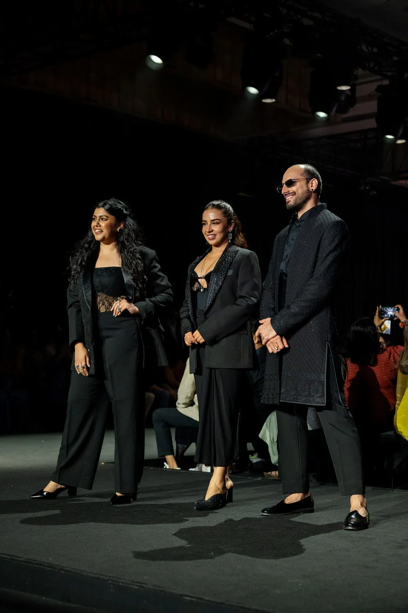
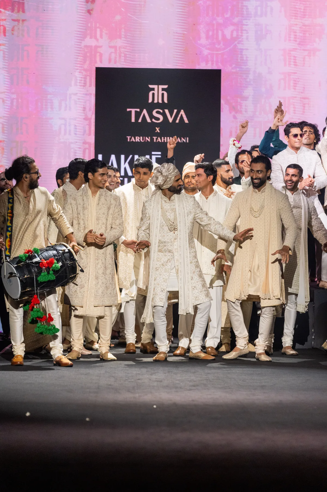
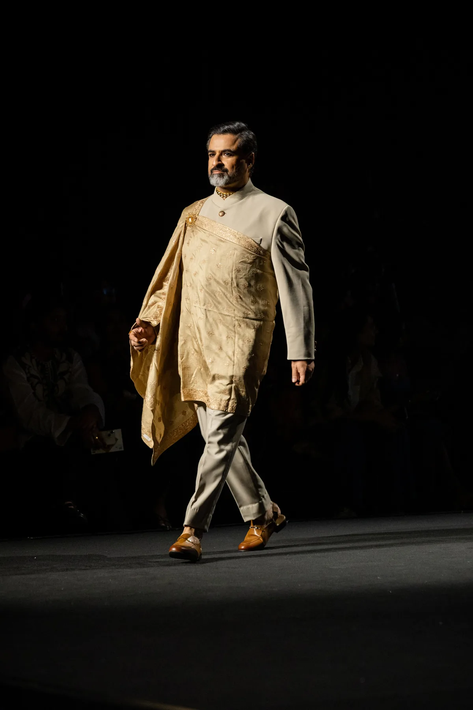
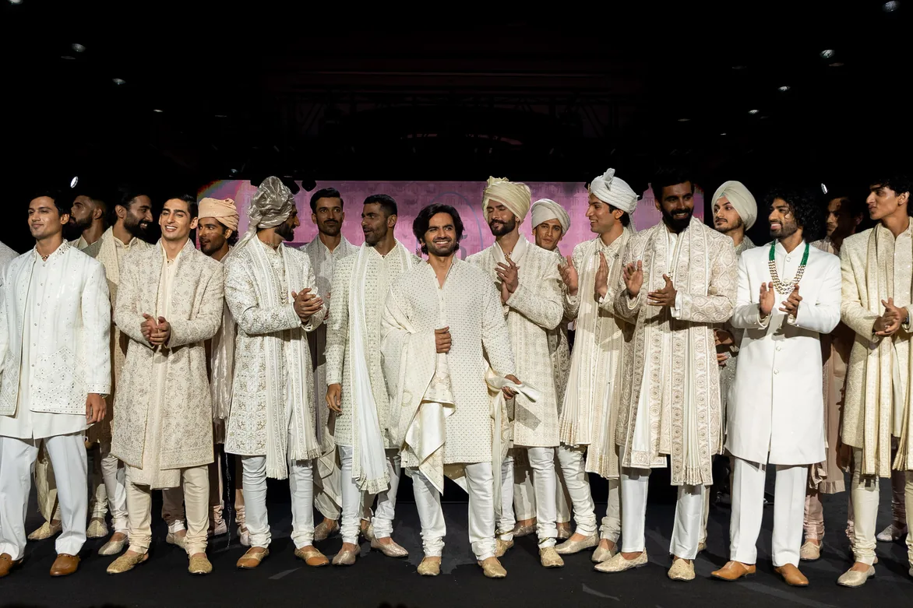
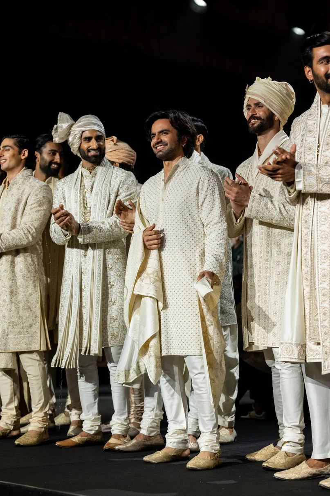
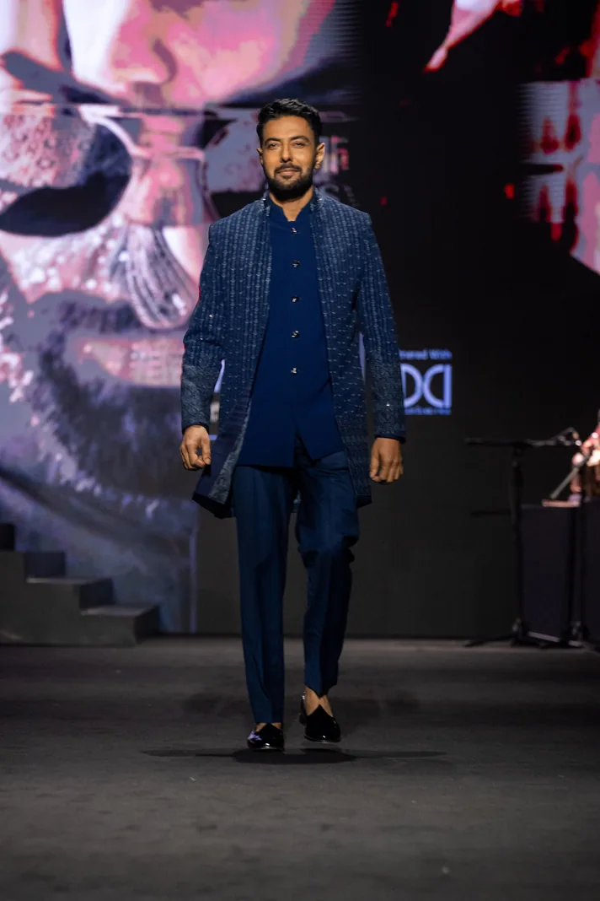

TASVA by Tarun Tahiliani
Baraat, Hyderabad & Lakmé Fashion Week

Background
Apostrophe has partnered with TASVA across multiple high-visibility fashion and retail moments, supporting the brand's evolution through standalone fashion showcases, celebrity-led events, store launches and Lakmé Fashion Week appearances.
The mandate has consistently focused on bringing together fashion, celebrity, media, influencers and culturally relevant social communities to create visibility around TASVA's contemporary interpretation of Indian occasionwear.
Objective
To establish TASVA as a prominent contemporary Indian occasionwear brand, generate national and regional visibility around key brand moments, and use high-profile personalities, fashion platforms and social communities to create sustained conversation and cultural relevance.
Solution
Apostrophe has led communications and on-ground amplification across multiple TASVA initiatives, including Baraat by TASVA, the Hyderabad store launch and TASVA's Lakmé Fashion Week debut.
Baraat by TASVA: TASVA's First-Ever Standalone Show
Apostrophe supported TASVA's first-ever standalone show, Baraat by TASVA, creating a fashion-first moment around the brand's wedding and festive proposition.
The mandate included exclusive national and regional media interactions with Ranbir Kapoor and Tarun Tahiliani, facilitating interviews with both personalities, closing personalities to walk the runway, and onboarding and dressing influencers for the event.
Apostrophe also activated community pages, wedding pages, fan pages and paparazzi platforms, alongside model and influencer collaborations, to extend the show's visibility beyond the physical event. The guest and media strategy secured CAT-A coverage across fashion, lifestyle and entertainment media, supported by on-ground event coordination.
Key personalities and collaborators associated with the event included Ranbir Kapoor, Tarun Tahiliani, Manav Chhabra, Unnati Malharkar, Apoorva aka The Rebel Kid, Anubhav Singh Bassi and Suvir Saran.
The event generated an EMV of ₹63.5 Cr, derived from the compilation of paid and earned media.
TASVA Hyderabad Store Launch
For TASVA's Himayath Nagar store launch in Hyderabad, Apostrophe created a regional fashion moment around a celebrity-led “Baraat”, featuring Naga Chaitanya, alongside Tarun Tahiliani and brand head Ashish Mukul.
Apostrophe managed guest-listing, exclusive national and regional media interactions, influencer dressing, community and wedding-page activations, paparazzi outreach, alcohol sponsorship and on-ground event coordination.
The launch generated significant buzz across social and community platforms, with extensive paparazzi and media coverage positioning the store opening as a notable fashion event within Hyderabad's social circuit.
The event generated an EMV of ₹39.1 Cr, derived from paid and earned media.
TASVA × Lakmé Fashion Week 2023
Apostrophe supported TASVA's debut at Lakmé Fashion Week 2023, managing the celebrity and influencer ecosystem around the show.
The agency onboarded celebrity and influencer faces to participate in the walk, managed end-to-end coordination, and negotiated and onboarded Vijay Varma as the showstopper.
Apostrophe also facilitated media interviews with Tarun Tahiliani and Vijay Varma, managed media and influencer attendance and seating, coordinated event requirements, and led media coverage and tracking. Visual content creation further extended the show's impact beyond the runway.
Impact
Across these initiatives, Apostrophe helped TASVA turn key brand moments into high-visibility cultural and fashion occasions, combining celebrity influence with editorial media, influencer advocacy and targeted social amplification.
The work generated substantial earned and paid media visibility, including ₹63.5 Cr EMV for Baraat by TASVA and ₹39.1 Cr EMV for the Hyderabad store launch, while TASVA's Fashion Week debut established the brand within the national fashion calendar with Vijay Varma as showstopper.
The continued engagement across multiple TASVA initiatives reflects Apostrophe's ability to build long-term brand momentum rather than isolated event visibility, connecting fashion, celebrity, media and community ecosystems around the brand.





